💡 How to follow: You do not have to live with knee pain. After having three ACL surgeries, my knees were in a ton of pain. And I couldn't do things like this with no pain and definitely not this with no pain. So what did I do? So one of the first things I started doing was backwards treadmill walks. As this exercise strengthens the muscles around your knees as well as brings blood flow through your knees. So it protects and heals your knees at the same time. There's not a single day that goes by where I do not do this exercise. As I love backwards treadmill walks for just overall knee health. The second thing
1
You do not have to live with knee pain.
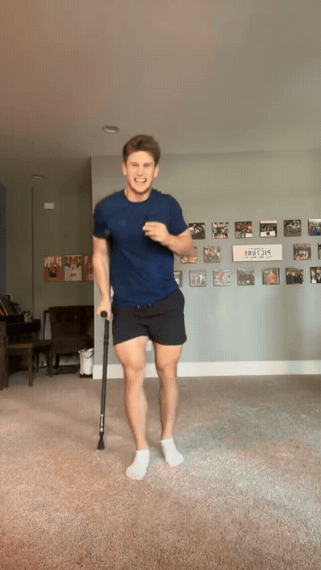
You do not have to live with knee pain.
2
You do not have to live with knee pain. After having three ACL surgeri
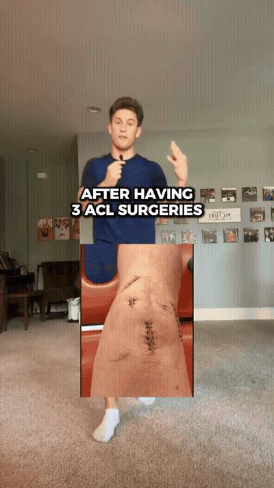
You do not have to live with knee pain.
After having three ACL surgeries,
my knees were in a ton of pain.
3
So what did I do? So one of the first things I started doing was backw
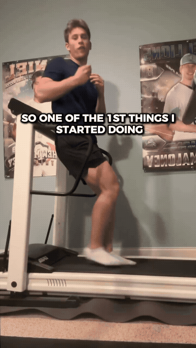
So what did I do?
So one of the first things I started doing
was backwards treadmill walks.
4
As this exercise strengthens the muscles around your knees as well as
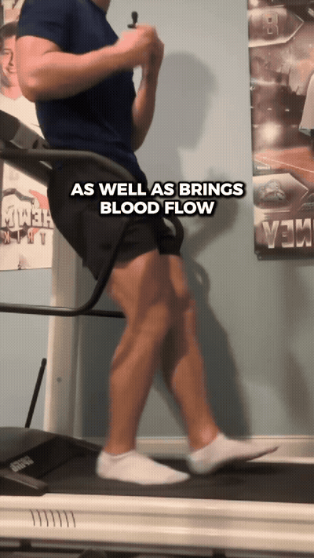
As this exercise strengthens the muscles around your knees
as well as brings blood flow through your knees.
So it protects and heals your knees at the same time.
5
So it protects and heals your knees at the same time. There's not a si
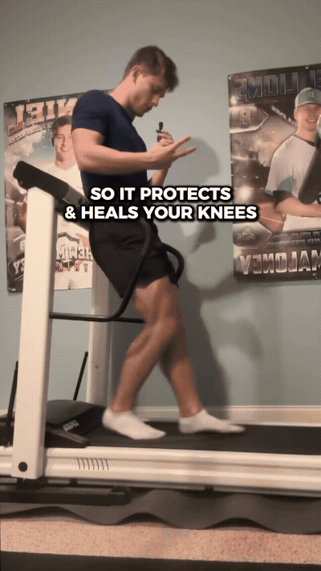
So it protects and heals your knees at the same time.
There's not a single day that goes by
where I do not do this exercise.
6
Where I do not do this exercise. As I love backwards treadmill walks f
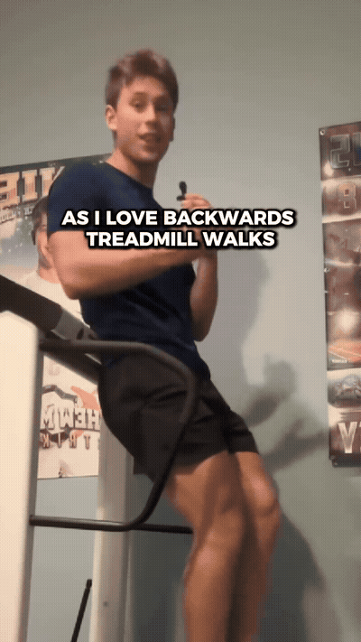
where I do not do this exercise.
As I love backwards treadmill walks
for just overall knee health.
7
For just overall knee health. The second thing I started doing with si
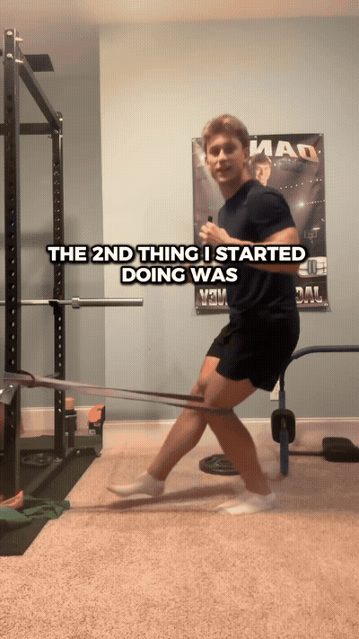
for just overall knee health.
The second thing I started doing with single leg TKs
is this exercise is a great job of getting blood flow
8
Which the tear drop muscle right above your knee care.
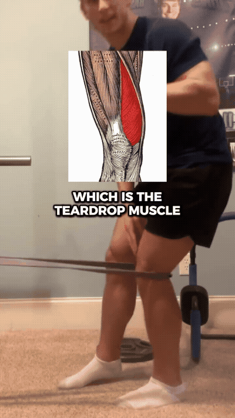
which the tear drop muscle right above your knee care.
9
Which the tear drop muscle right above your knee care. And the third e
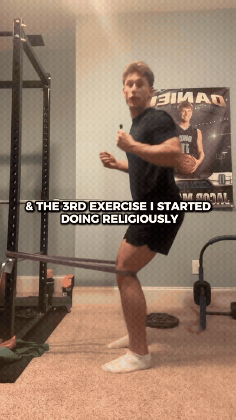
which the tear drop muscle right above your knee care.
And the third exercise I started doing religiously
was Spanish squats.
10
And on the 10th rep, hold it at the bottom position for 20 seconds. An
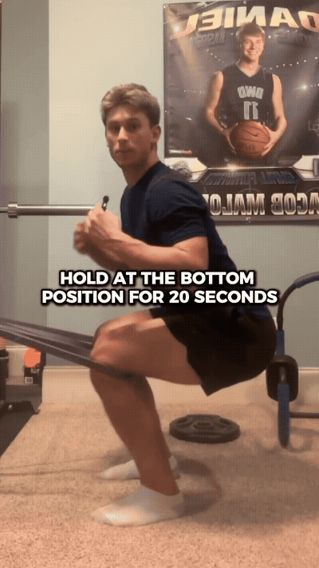
And on the 10th rep, hold it at the bottom position
for 20 seconds.
And I guarantee your knee's gonna feel
11
A little bit better right after. And then lastly, debatably the bigges
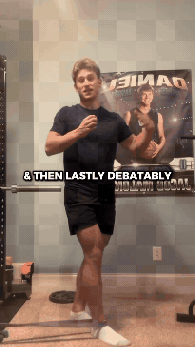
a little bit better right after.
And then lastly, debatably the biggest difference maker